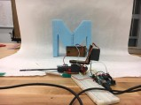

LOFT
one of seven rooms with expanded celings in our dorm building, my roommate and I got voted to build a loft to live in for the year. it took us simply a day to drill together the wooden foundation, and simply the next couple of weeks to fully furnish it and make it feel like home.

3D SCANNER
using Arduino and servo motors, we built a pan-tilt motor complete with an infrared distance sensor that can scan an object and plot its 3D shape in MATLAB.

SECRET SANTA
an upperclassmate and I exchanged gifts for the holiday season. I wanted to craft something personal, and I knew that he lives and breathes music. inspired by a vinyl record, I added details that encapsulated some of our inside jokes from the year.

IDIN
as a researcher for the International Development Innovation Network, my co-researcher and I spent the semester designing hands-on tutorials for those in low-income and resource-poor areas to teach useful fabrication techniques. our curricula included how to make a charcoal press, a sheet metal water bucket, and a living machine.

RICA'S PANINIS
every other Friday, our hallway opens our doors for an open market called "4N Friday." my roommate and I sell homemade paninis, and strive simply to break even and to bring joy to people's lives with a gooey, hot-pressed sandwich that oozes with love, happiness, and good vibes.

GINGER ALE
currently brewing our first ginger bug culture, our breaths stand abated as we wait to concoct our own ginger ale.


{kind=link}